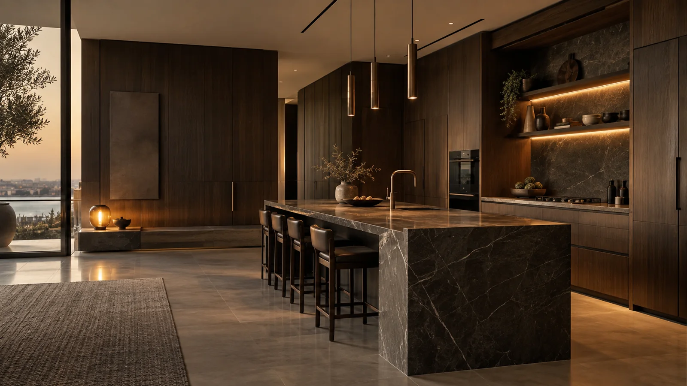

مطابخ فاخرة
واجهات متماسكة وتكوين يبرز جمال الخشب مع تخزين عملي ومساحات عمل واضحة.

أعمال خشبية فاخرة تشمل المطابخ والخزائن والمغاسل من موقع COTTON WOOD في صناعية الدمام، مع واتساب مباشر لبدء الطلب.
كل مساحة لها حركة واحتياج مختلفان. هنا تُعرض الفئات بوضوح حتى يصل العميل مباشرة إلى ما يبحث عنه.
واجهات متماسكة وتكوين يبرز جمال الخشب مع تخزين عملي ومساحات عمل واضحة.
وحدات تُفصل حول الجدار والارتفاع والاستخدام، من الخزانة الهادئة إلى غرفة الملابس.
تفاصيل خشبية تكمل المشهد الداخلي وتربط الخامة بين أكثر من مساحة داخل المشروع.
واجهة COTTON WOOD تضع الخامة والتفصيل في المقدمة، ثم تجعل التواصل وطلب المعاينة أقرب خطوة بعد مشاهدة العمل.
الصور التصورية تكمل الهوية البصرية للموقع، بينما البيانات والقنوات والمواقع مرتبطة بمصادر النشاط العامة.
شارك نوع العمل وصور المساحة والمقاسات التقريبية عبر واتساب للحصول على بداية أوضح للمناقشة.
 واتساب
واتساب